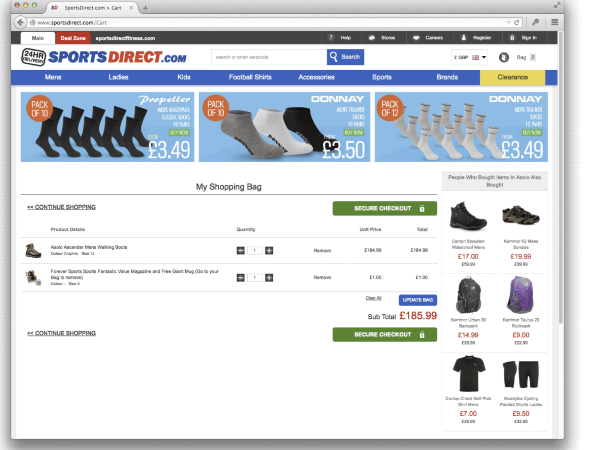
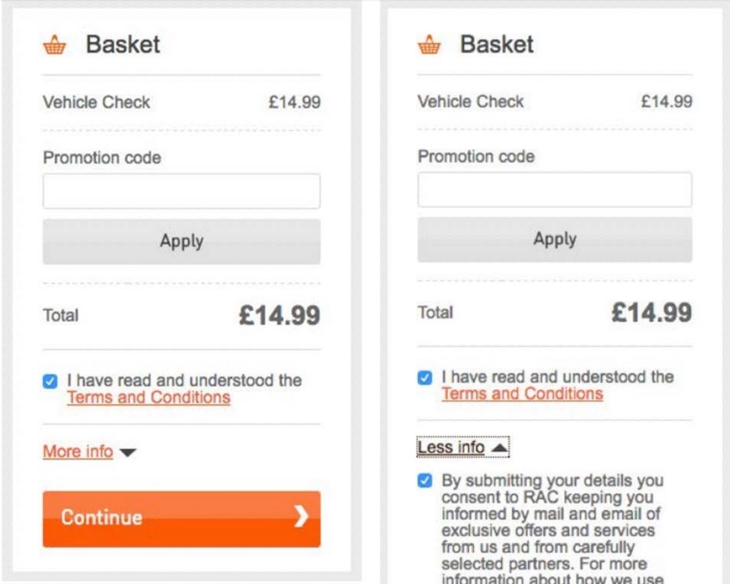

- Sneaking occurs when websites intentionally hide or obscure important information from users, such as additional costs or unwanted consequences. This tactic is often used to manipulate users into taking actions they wouldn't normally choose.
- In real-world, if you overlook the Sneaking tactic, you might find that these websites add extra items to your order without your consent.
Now, you're left with additional items you never wanted in the first place, and it's up to you to remove them.
Real-world example #1:
In 2015, UK sports retailer sportsdirect.com was found to be
Sneaking an unwanted magazine subscription into users' shopping baskets during the checkout process. The magazine cost an extra £1, and was added without users' explicit consent or knowledge. If users noticed it, they had to actively remove it from their basket if they did not wish to purchase it.

Real-world example #2:
Rac.co.uk forces users to select “More info” to be able to opt out of sharing information and email spam. If users click 'Continue' directly, they will receive mail and email about exclusive offers.
